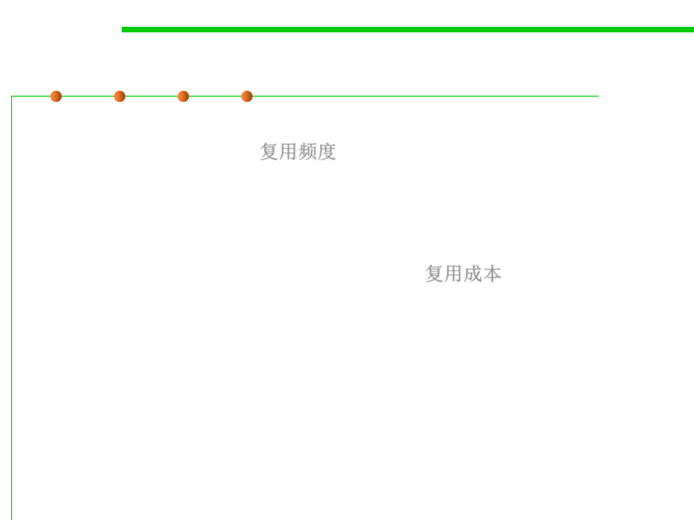

5.1 Metrics, Morphology and External Observations of Reusability
Measure resuability
▪ How frequently can a software asset be reused in different
application scenarios? 复用频度
– The more chance an asset is used, the higher reusability it has.
– Write once, reuse multiple times.
▪ How much are paid for reusing this asset?复用成本
– Cost to buy the asset and other mandatory libraries
– Cost for adapting it
– Cost for instantiating it
– Cost for changing other parts of the system that interact with it